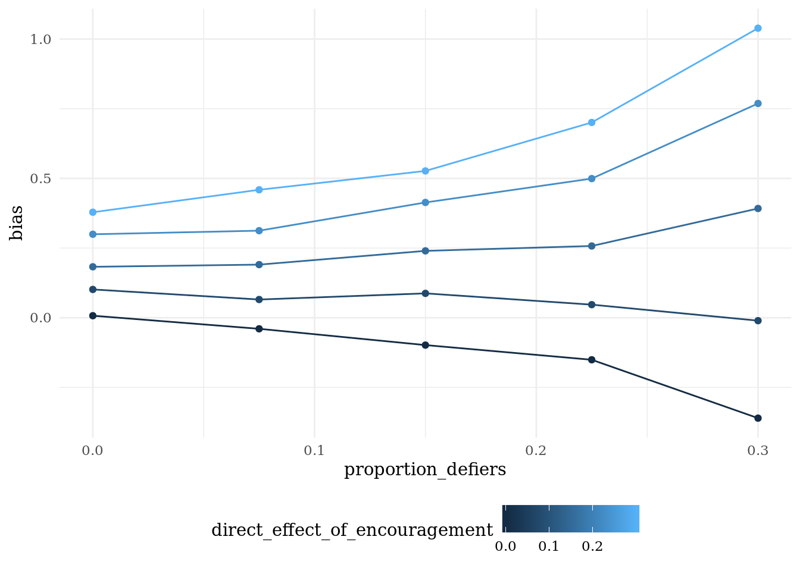

14.2 Multilevel regression and poststratification
14.2.1 Declaration
fixed_population <- declare_population(N = 500,
X = sample(c("A", "B", "C"), N, replace = TRUE),
Y = sample(1:7, N, replace = TRUE))()
design <-
declare_population(data = fixed_population) +
declare_estimand(Ybar = mean(Y)) +
declare_sampling(strata_prob = c(0.2, 0.1, 0.3), strata = X) +
declare_step(B_demeaned = (X == "B") - mean(X == "B"),
C_demeaned = (X == "C") - mean(X == "C"), mutate) +
declare_estimator(Y ~ B_demeaned + C_demeaned, term = "(Intercept)", model = lm_robust, estimand = "Ybar")14.2.2 Dag

14.2.3 Example
14.2.4 Example
You can use the global bib file via rmarkdown cites like this: Imai, King, and Stuart (2008)
| district | population_size | prop_white | prop_black | prop_asian | prop_hispanic_other | prop_democrat | prop_republican |
|---|---|---|---|---|---|---|---|
| 1 | 41995 | 0.6848196 | 0.2414573 | 0.0325039 | 0.0500774 | 0.5185611 | 0.2436329 |
| 2 | 41076 | 0.2573035 | 0.6714870 | 0.0072305 | 0.0904421 | 0.7334309 | 0.0992582 |
| 3 | 40878 | 0.3384706 | 0.5112775 | 0.0085376 | 0.2235677 | 0.6786992 | 0.1176531 |
| 4 | 41287 | 0.8557415 | 0.0381718 | 0.0790564 | 0.0357498 | 0.3469342 | 0.3956847 |
| 5 | 40722 | 0.8473061 | 0.0709199 | 0.0597957 | 0.0208732 | 0.3942886 | 0.3638110 |
| 6 | 41985 | 0.8783613 | 0.0674765 | 0.0123854 | 0.0431821 | 0.4042878 | 0.3675094 |
# US population
delaware_population_df <- fabricate(
data = delaware_senate_districts_df,
individuals = add_level(
N = population_size,
race_white = rbinom(N, 1, prob = prop_white),
race_black = rbinom(N, 1, prob = prop_black),
race_asian = rbinom(N, 1, prob = prop_black),
race_hispanic_other = rbinom(N, 1, prob = prop_hispanic_other),
pid_republican = rbinom(N, 1, prob = prop_republican),
pid_democrat = rbinom(N, 1, prob = prop_democrat)
)
) %>%
select(-starts_with("prop_"), -population_size)
# population weights for MRP
mrp_weights <- delaware_population_df %>%
group_by(district, race_white, race_black, race_asian, race_hispanic_other, pid_republican, pid_democrat) %>%
summarize(n_cell = n()) %>%
group_by(district) %>%
mutate(proportion_cell = n_cell/sum(n_cell)) %>%
select(-n_cell) %>%
ungroup
delaware_population_df <- mrp_weights %>%
select(district, proportion_cell) %>%
right_join(delaware_population_df)
# Lax and Philips APSR 2009
# Policies are coded dichotomously, 1 for the progay policy and 0 otherwise: Adoption (9 states allow second-parent adoption in all jurisdictions)
design <-
declare_population(
data = delaware_population_df,
districts = modify_level(district_effect = rnorm(N)),
individuals = modify_level(
noise = rnorm(N, mean = district_effect),
policy_support = rbinom(N, 1, prob = pnorm(
0.25 + 0.2 * race_white - 0.1 * race_black - 0.2 * race_hispanic_other -
0.1 * pid_democrat + 0.15 * pid_republican + noise))
)
) +
declare_estimand(handler = function(data) {
data %>%
group_by(district) %>%
summarize(estimand = mean(policy_support)) %>%
ungroup %>%
mutate(estimand_label = "mean_policy_support")
}) +
declare_sampling(n = 500) +
declare_estimator(handler = tidy_estimator(function(data) {
data %>%
group_by(district) %>%
summarize(estimate = mean(policy_support))
}), label = "strata_means", estimand = "mean_policy_support") +
# this estimator owes code to https://timmastny.rbind.io/blog/multilevel-mrp-tidybayes-brms-stan/
declare_estimator(handler = tidy_estimator(function(data) {
model_fit <- glmer(
formula = policy_support ~ race_white + race_black + race_asian + race_hispanic_other +
pid_democrat + pid_republican + (1 | district),
data = data, family = binomial(link = "logit"))
data %>%
mutate(
support_predicted =
prediction(model_fit, data = ., allow.new.levels = TRUE, type = "response"),
support_predicted_weighted = support_predicted * proportion_cell
) %>%
group_by(district) %>%
summarize(estimate = sum(support_predicted_weighted))
}), label = "mrp_mle", estimand = "mean_policy_support")
dat <- draw_data(design)
draw_estimates(design)
sims <- simulate_design(design, sims = 3)
diag <- diagnose_design(design, sims = 100, diagnosands = declare_diagnosands(select = bias), add_grouping_variables = "state")This chunk is set to echo = TRUE and eval = do_diagnosis
Right after you do simulations, you want to save the simulations rds.
Now all that simulating, saving, and loading is done, and we can use the simulations for whatever you want.
| design_label | sim_ID | estimator_label | term | estimate | std.error | statistic | p.value | conf.low | conf.high | df | outcome |
|---|---|---|---|---|---|---|---|---|---|---|---|
| design | 1 | estimator | Z | 0.9624445 | 0.1705951 | 5.641688 | 0.0000002 | 0.6234399 | 1.301449 | 88.32465 | Y |
| design | 2 | estimator | Z | 0.9532166 | 0.2124610 | 4.486548 | 0.0000200 | 0.5315217 | 1.374911 | 96.66334 | Y |
| design | 3 | estimator | Z | 0.9674071 | 0.2137695 | 4.525468 | 0.0000170 | 0.5431863 | 1.391628 | 97.96114 | Y |
| design | 4 | estimator | Z | 1.0545908 | 0.1942247 | 5.429747 | 0.0000004 | 0.6690878 | 1.440094 | 96.58766 | Y |
| design | 5 | estimator | Z | 1.0708566 | 0.1897958 | 5.642153 | 0.0000002 | 0.6942127 | 1.447501 | 97.99051 | Y |
| design | 6 | estimator | Z | 0.7197320 | 0.1964379 | 3.663916 | 0.0004076 | 0.3297870 | 1.109677 | 95.63827 | Y |
References
Imai, Kosuke, Gary King, and Elizabeth A. Stuart. 2008. “Misunderstandings Between Experimentalists and Observationalists About Causal Inference.” Journal of the Royal Statistical Society: Series A (Statistics in Society) 171 (2): 481–502.